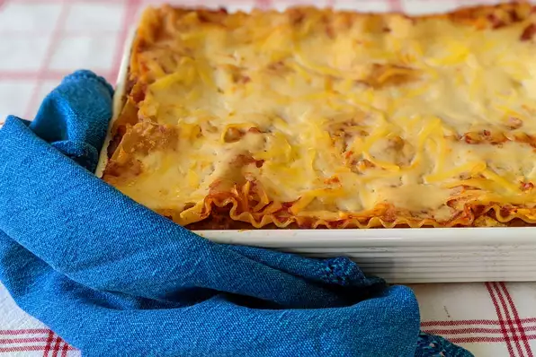

Homemade Lasagna

A recipe for a tasty homemade lasagna, Italy's healthiest and second most delicious food, probably.
Ingredients
- Meat:500 grams ground meat.
- Onion: A sliced onion to cooked with the ground meat.
- Canned tomatoes: both a can of tomato sauce and a can of crushed tomatoes.
- Fresh herbs: Chop two tablespoons of parlsey and crush one clove of garlic.
- Sugar: A dash of sugar to balance the acidity of the tomatoes.
- Spices and seasoning: This lasagna is seasoned with dried basil, oregano, salt, black peper.
- Noodles: Of course, you'll need lasagna noodles.This recipe calls for uncooked noodles, but you can use the oven-ready variety to save time.
- Cheese: The cheese layer is made up of cottage cheese and Parmesan. You'll also need shredded mozzarella.
- Eggs: Eggs make the cheese layer extra creamy. Plus, they act as a binding agent.